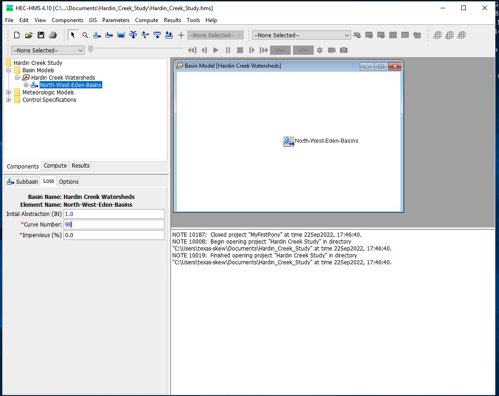
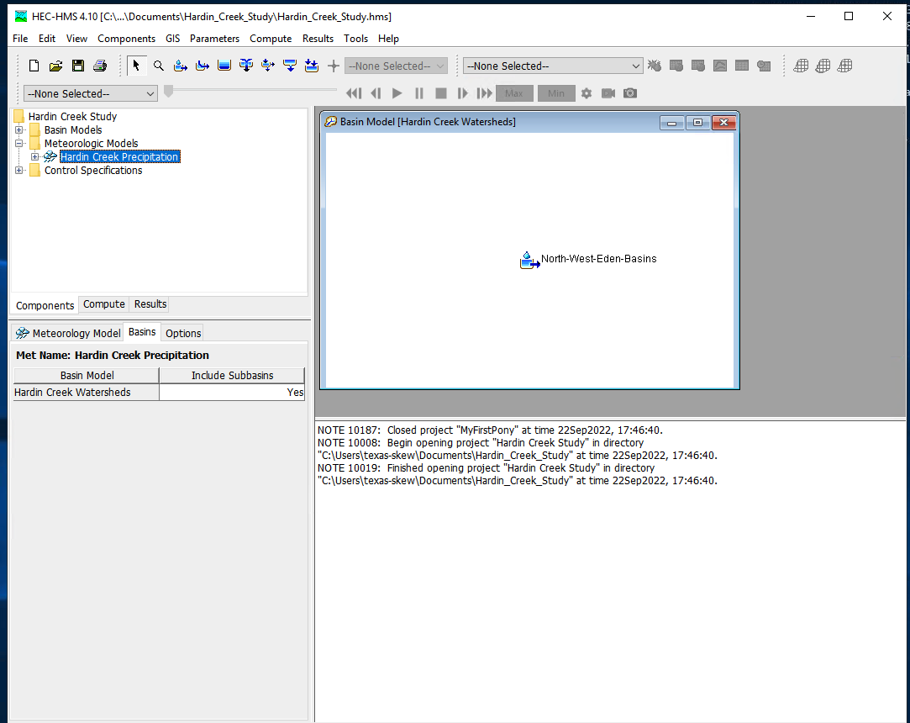
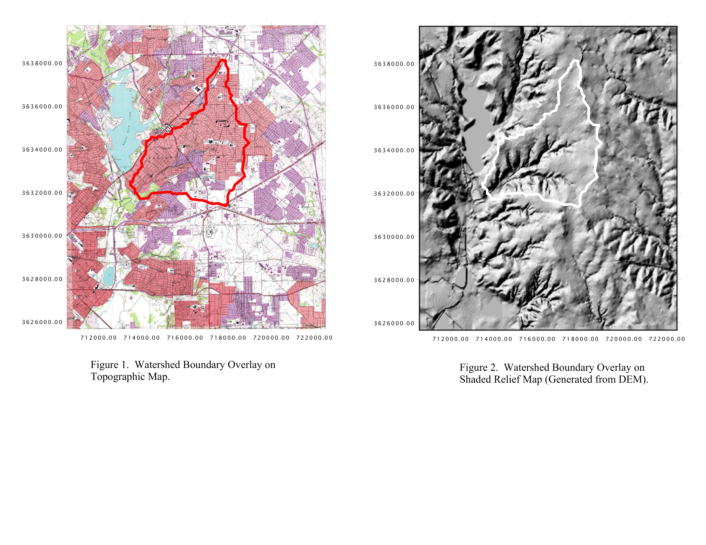
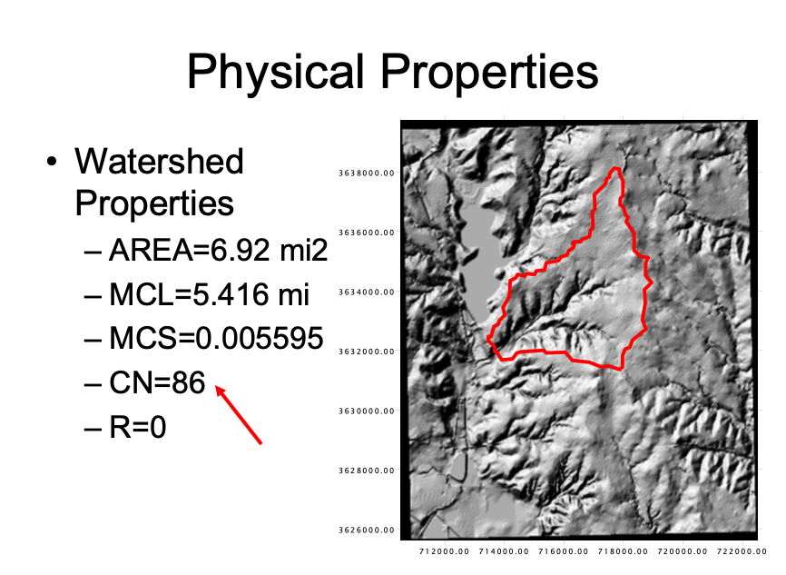
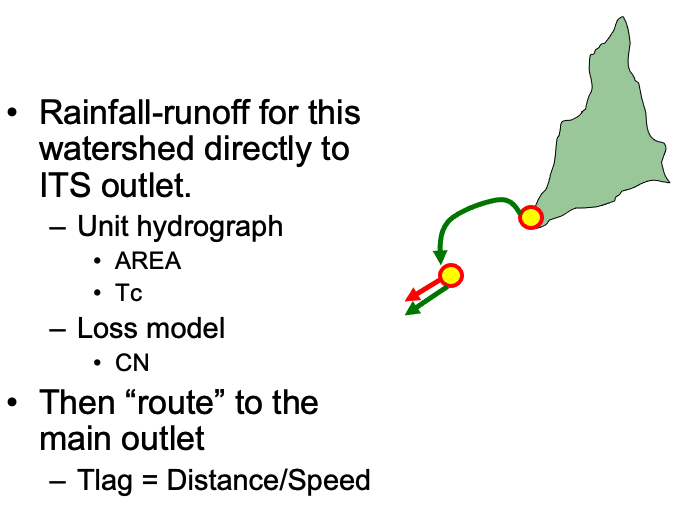
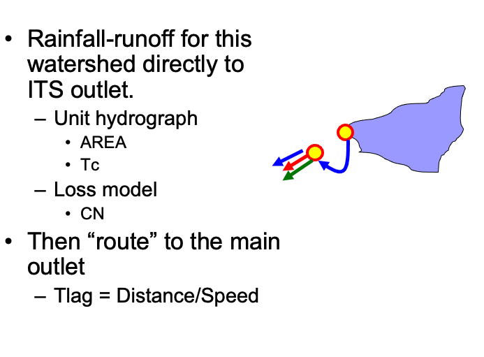

16. HEC-HMS#
Course Website
Readings#
Videos#
There are a lot of videos on YouTube suitable for self-training to use HEC-HMS (non-gridded). The gridded HMS is a more advanced exercise (you have to have GIS skills first) and is the obvious extension of lumped (non-gridded) models – but outside the course scope.
Outline#
About HEC-HMS
Installation
About HEC-HMS#
HEC-Hydrologic Modeling System (HMS) the U.S. Army Corps of Engineers’ software package for modeling the complete hydrologic processes of dendritic watershed systems. The software includes many traditional hydrologic analysis procedures such as event infiltration, unit hydrographs, and hydrologic routing. HEC-HMS also includes procedures necessary for continuous simulation including evapo-transpiration, snowmelt, and soil moisture accounting. Advanced capabilities are also provided for gridded runoff simulation using the linear quasi-distributed runoff transform (ModClark). Supplemental analysis tools are provided for model optimization, forecasting streamflow, depth-area reduction, assessing model uncertainty, erosion and sediment transport, and water quality. The software and documentation are available free of charge.
Note
Some of the stated capabilities above are marketing BS, but the software is a widely used tool. A practicing Civil and Enviornmental Engineer would be expected to be proficient in HEC-HMS and/or SWMM
Proficiency in HEC-HMS involves:
Understanding of Hydrologic Processes:
A solid grasp of hydrologic principles and processes, such as rainfall-runoff relationships, loss models, baseflow separation, and channel routing.Model Development:
Ability to create and configure hydrologic models, including defining watershed boundaries, inputting hydrologic data (precipitation, temperature, etc.), and setting up sub-basins, reaches, junctions, and reservoirs.Selection and Application of Methods:
Knowledge of various computational methods available in HEC-HMS for different hydrologic processes, such as loss models (e.g., SCS Curve Number, Green-Ampt), transform methods (e.g., SCS Unit Hydrograph, Clark Unit Hydrograph), and routing methods (e.g., Muskingum, Kinematic Wave).Data Management:
Competence in importing and managing input data, such as time series data for precipitation, temperature, streamflow, and observed data for model calibration.Model Calibration and Validation:
Skill in calibrating the model parameters to match observed data, and validating the model’s performance with different data sets to ensure its reliability.Simulation and Analysis:
Capability to run simulations, interpret results, and analyze hydrographs, peak flows, and flow volumes for different scenarios (e.g., different rainfall events or land-use changes).Advanced Features:
Familiarity with advanced features, such as simulating stormwater management practices, running continuous simulations, or using the software for flood forecasting.Troubleshooting and Problem-Solving:
Ability to identify and resolve issues related to model setup, data inconsistencies, and convergence problems.Documentation and Reporting:
Proficiency in documenting the modeling process, assumptions, and results, as well as preparing professional reports and presentations.
Being proficient in HEC-HMS means not only knowing how to use the software’s interface but also understanding the underlying hydrologic concepts and methodologies, enabling effective and accurate hydrologic modeling and analysis.
History of HMS#
HMS Evolved from HEC-1 as part of a “new-generation” software emphasis circa 1990. The main end-user result is an Integrated user interface to speed up data input and enhance output interpretation.
Overview#
HMS is a complex and sophisticated tool:
Intended to be used by a knowledgeable and skilled operator
Knowledge and skill increase with use
The skills are perishable
Data management#
Graphical User Interface (GUI)
Multiple input files
Multiple output files
Time-series in HEC-DSS
All files arranged in a Project which is the fundamental data organization structure
Paths to individual files
Can compress and e-mail entire project folders and have them run elsewhere (assuming the files are stored in the folder in their entirety)
Hydrologic Conceptualization#
Organizes precipitation, watershed interaction, and runoff into major elements
Basin model and sub-basin description
Downstream connections: how the system components are interconnected
Loss model: how rainfall is converted into excess rainfall
Transformation model: how the excess rainfall is redistributed in time and moved to the hydrologically nearest outlet (unit hydrographs, routing elements …)
Meterological model
Raingage specifications and assignment to different sub-basins
Time-series models: Supply input hyetographs; Supply observed hydrographs
Simulation control
Supply instructions of what, when, how to simulate
In the end HEC-HMS is a Hydrologic Model and can estimate:
Peak Flows
Hydrographs
It can perform
Hydrograph Routing
Stream reaches
Reservoirs and detention basins
Hydrograph lagging and attenuation
Sub-basin modeling (if appropriate)
Precipitation to Runoff
Abstractions
Fraction of precipitation that does not contribute to runoff (and ultimately discharge)
Routing
Watershed routing (unit hydrograph and similar concepts)
Stream (Channel) routing
Reservoir (Storage) routing
Installation#
Navigate to the HEC-HMS website, select software appropriate for your computer.
Note
My copy of HEC-HMS is stored as a cloud application hosted on AWS. It houses a fully provisioned Windows Implementation of HEC-HMS (and some other tools) and is located at:
server_name: kittyinthewindow.ddns.net
user_name: texas-skew
passwd: peakfq73$hare
Users must access using Remote Desktop Protocol (Built into Windows, Apple Store has a free Mac application).
For a typical winders machine:
Download an installer
Run the installer
Accept the defaults (otherwise YOYO!)
Upon sucessful install you should be able to select the program and launch it and get the control interface
To install supplied examples, navigate to the help tab (in the HMS interface) and select download examples
Note
Usually the above works, unless you try something fancy and are clueless. If you cannot figure it out go here
HEC-HMS Minimal Model#
A minimal model consists of
Basin Model
Meteorological Model
Control Specifications
Basin Model Specification#
For this example we will use the Hardin Creek basin which is about 17 square miles. For the example we will neglect the reservoirs and model the whole thing as a single watershed.
To create a basin model, select Components from the menu then Basin Manager

As with most HMS creator dialogs, you next name the basin.

Meterological Model Specification#
To create a meterological model, select Components from the menu then Meterological Model Manager

As with most HMS creator dialogs, you next name the model.
Control Model Specification#
The last component is the control specification model (with dates and times for the simulation period). To create a control model, select Components from the menu then Control Model Manager
Then next name the model.

Parameterizing the models#
Now that the pieces are built, we need to supply watershed and rainfall characteristics to the components for a useable model. First we will simulate the entire watershed as a single basin, with CN=98, and all other watershed-based model components disabled (i.e. None)
First build the single basin

Then supply the inputs, first area and the CN model. Disable all the remaining methods (choose –None–)

Then the CN parameters (same as in class)

Then supply the meterological model inputs, for the example we will use an SCS design storm, in HMS its called “hypothetical” storm.

Then be sure the correct basins are attached to the precipitation input signal

Next select the storm itself and supply model inputs
Now select the control specifications and provide needed time values (must be calendar/clock time, HMS does not easily handle elapsed times - you can use fake dates as needed)

Now one can select simulation run builder


Once these are complete select Finish and the run manager is loaded, next select the particular run to active the compute engine

At this point it should be ready, this is a good time to save the project, then reload the saved project from the file menu. Now attempt to run the simulation by selecting the exploding raindrop!

With some luck it works like

With a suseccful run we can examine various output features - to complete this notebook section we will just use a default chart of runoff from the watershed. Select the Results/Element_Graph to get:

There are tutorials and examples in the User Manual for the software.
HEC-HMS Multiple Elements#
This example uses data from AshCreek Data (zip). The .ZIP file is an old homework problem, learners had to convert the provided data files into a format that HEC-HMS could process then analyze the watershed and interpret results and answer some questions. The original problem statement is shown below
Problem Statement
HEC-HMS Exercises
In this folder are rainfall-runofff data for three storms on Ash Creek watershed in Dallas, Texas.
Included are some base maps to help locate the watershed.
The maps are simply PDF files and are not georeferenced, so other than pretty pictures the maps are useless.
Using HEC HMS model the Ash Creek Watershed using a loss model of your choice and a transformation model of your choice. Model the watershed as a lumped system (one sub-basin, no routing).
(1) Estimate parameter values in the model without using the time-series data (synthetic hydrology). Document how you make the estimates.
(2) Test your estimated with the 1973_0603 storm, how well did your synthetic approach perform.
(3) Use the 1973_0603 storm to “calibrate” your model. Trial-and-error is appropriate, or you chould choose the internal calibration tools in HMS, also your choice. Demonstrate the calibrated model by capturing the model output for the storm (i.e. a time series of computed and observed discharge). Use the weighted accumulated precipitation is the input (since we don’t have the raingage locations).
(4) Test the calibrated model with the other two storms (DO NOT CHANGE PARAMETERS IN THE MODEL). Assess model performance with thses other two real storms. What do you conclude?
(5) Now try to adjust the parameters to obtain a best “average” performance. What do you conclude?
(6-8) Repeat steps 3-5 with the watershed subdivided into multiple sub-basins, with routing. Use any subdivision scheme you think is appropriate, but use at least 3 sub-basins.
Did subdivision confer any performance advantage? At what cost?
(9) Presumably you represented the current conditions with some variable that reflects the land coverage. Estimate the watershed response to the historical storms if the entire watershed is impermeable, and very smooth (low friction).
Prepare a brief report on the modeling effort, be sure to address each question above. Due in 2 weeks.
You will need to download the HEC-HMS user manual and do some reading in the manual as well as in the hydrology literature and textbook to complete this exercise.
Here is a look at the watershed

The study area is Highland Road and Ash Creek, Dallas, TX. Area is residential subdivisions, light industrial parks, and some open parkland. White Rock Lake is water body to the North-West
Now if we make measurements we might arrive at

So one can model as just this lumped basin or apply some subdivision like:

If we use the subdivided case, we will need routing elements and parameters for each subbasin.
Red basin

Green basin 
Blue basin 
Combined

Using measuring tools (GIS, Acrobat Pro, Paint, ….) determine area, and lengths, get CN using NRCS tools.
Sub-Basin ID |
Property |
Value |
|---|---|---|
Red |
AREA |
1.87 sq.mi. |
Red |
CN |
86 |
Red |
Dist. To Outlet |
0 |
Green |
AREA |
2.67sq.mi. |
Green |
CN |
86 |
Green |
Dist. To Outlet |
4227ft |
Blue |
AREA |
2.39sq.mi |
Blue |
CN |
86 |
Blue |
Dist. To Outlet |
2660 ft |
Then estimate travel times for the routing elements

Note
HEC-HMS requires a lot of external (to the program) thinking and preparation.
Try to gather data reports before modeling if at all possible.
Keep a notebook handy to write down intermediate values as needed.